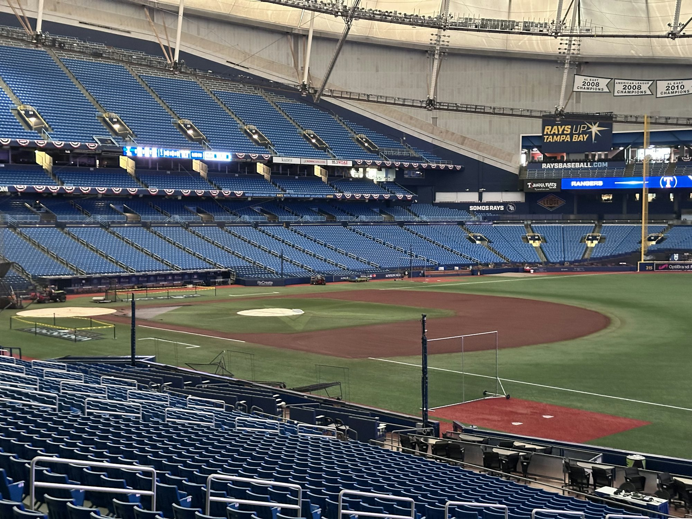
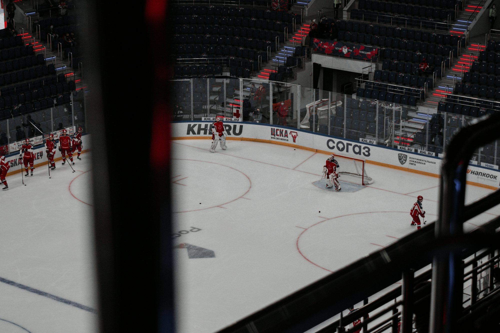
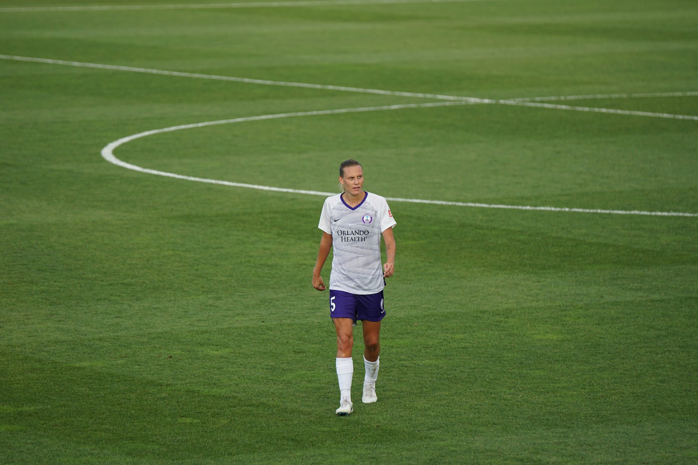

Cultura del béisbol: el latido del pasatiempo favorito de Estados Unidos

Galería




La guía esencial de las reglas del fútbol: comprender el juego
Este artículo ofrece una descripción general completa de las reglas y regulaciones clave que rigen el fútbol, mejorando el conocimiento tanto de los jugadores como de los fanáticos.
Emma Johnson
01/11/25
Las habilidades y técnicas que definen la excelencia en el hockey
Este artículo explora las habilidades y técnicas esenciales requeridas en el hockey, centrándose en el patinaje, el manejo de la mano, el paso, el tiro y el juego estratégico, proporcionando información para los jugadores en todos los niveles.
02/14/25
El impacto de los programas de baloncesto juvenil en el desarrollo comunitario
Una exploración de cómo los programas de baloncesto juvenil fomentan el desarrollo comunitario, promueven la interacción social y fomentan el talento joven en los deportes.

Las reglas esenciales del fútbol: una guía completa
Este artículo ofrece una descripción detallada de las reglas y regulaciones fundamentales del fútbol, con el objetivo de mejorar la comprensión y la apreciación del juego tanto para jugadores como para fanáticos.
Oliver Grant
03/02/25
El arte de las habilidades y técnicas en el baloncesto
Ethan Johnson
09/19/24
El surgimiento de los deportes femeninos: romper barreras y establecer récords
Una exploración del crecimiento y el impacto de los deportes femeninos, destacando los logros, los desafíos y el futuro de las atletas femeninas en diversas disciplinas.
Maya Thompson
04/21/25
Las reglas esenciales del fútbol: una guía para jugadores y aficionados
Este artículo proporciona una descripción detallada de las reglas y regulaciones fundamentales del fútbol, explorando la jugabilidad, las dimensiones del campo y las funciones de los árbitros, mejorando el aprecio por el deporte.
12/22/24

El papel de la tecnología para mejorar la experiencia del estadio deportivo
Una exploración de cómo las innovaciones tecnológicas están transformando la experiencia de los fanáticos en los estadios deportivos modernos.
05/24/24